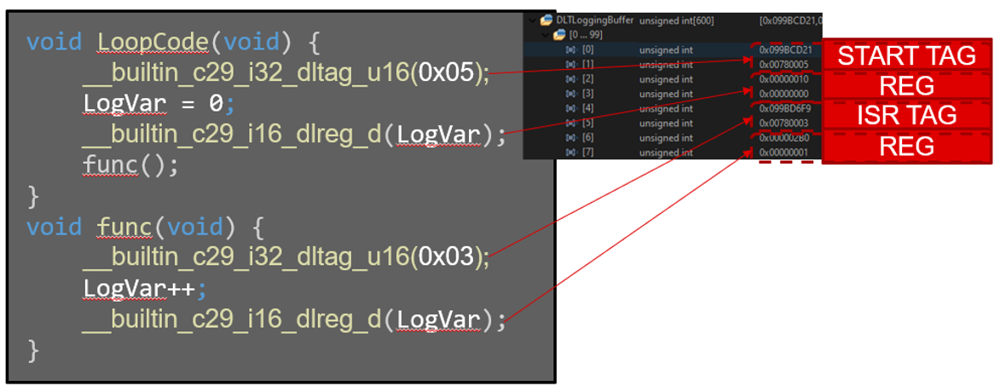

Data Log and Trace (DLT)#
Overview#
In this module, you will:
Gain a general understanding of what the DLT is
Understand common examples of where DLT is typically used
Observe a visual representation of how the data to be logged or traced is outputted
Introduction#
The Data Logger and Trace (DLT) peripheral provides a fast and efficient way to log data during real-time control loops, which can provide insight on how to optimize the control loop and provide another useful debugger tool. The DLT is non-intrusive to the CPU, so it does not require CPU overhead. The DLT uses an internal FIFO to store the data log and trace history. This FIFO can hold up to 256 data elements, each element being 64 bits long. There are dedicated instructions that can tell the DLT to start or stop of data logging, to insert markers that obtain information on when data is logged, and to define register to capture in order to store the data. The information that is captured includes:
The program counter
Timer information
Register values
The overflow status
The DLT can also be used in conjunction with the DMA (Direct Memory Access module) to read and export data more efficiently. The DMA can write to a location in memory or send data to a communication peripheral to then export the data out of the device.
Application of the DLT#
The DLT can use communication protocols such as UART, SCI, I2C, USB, or Ethernet to display the data being outputted by a control loop in real time. When the MCU transmits the DLT data using a communication peripheral, the DLT has already pre-defined how its FIFO is organized so that the data can be exported to memory or exported through a communication peripheral. This can be leveraged for debugging purposes or can be used to fine tune a control loop algorithm.
Why use the DLT?#
The main benefit of using the DLT is the ability to log data and set markers in the application code to further fine tune control algorithms or debug an application in a way that is not intrusive to the CPU. Another benefit of using DLT is the user does not need to add or remove code from the application after building the code (generating the executable ‘.out’ file). This is due to the flexibility of enabling or disabling code sections to data log. The specific data sections of code that need to be data logged can be set initially by the user and will have no impact on the overall system during run time.
Some advantages of using the DLT are:
Using ERAD or TAG filters to start events for a data log
Filtering or masking what data needs to be logged
Using a 256-level FIFO to store data logs
Each level in the FIFO has 64 bits of information about the data being logged
Time stamping
FIFO interrupt generation
With a general overview of the DLT established, we can get into what DLT is and how it works.
How does the DLT work?#
In general, the DLT can be used by completing the following tasks:
Configure the start and end references; configure the start and end masks
Configure the capture mode
Enable the DMA if needed
Configure any interrupts needed
In the application code, set up the sections to be data logged and define what variables to log (please refer to the C29x Instruction Set guide to view the built-in intrinsic)
Enable the DLT and reset TIMER2 if the capture mode is set to ‘time’
To read the contents from internal FIFO, the upper 32 bits can be read in order to see the next contents
The DLT at a High Level#
Once the DLT has been initially configured, below is a visual view of how the data or the markers will be logged in the DLT FIFO. Each FIFO entry is 32 bits long. In the DLTLoggingBuffer array, the odd indices contain the upper 32 bits of the DLT FIFO while the even indices contain the lower 32 bits of the DLTFIFO. Please refer to the FIFO format for a TAG and REG.
Sequence of Code#
Refer to Figure 1 below to follow along with the sequence of code:
LoopCode() is called first. When the intrinsic is reached for a DLTAG that matches the start reference, the DLT starts recording entries into the FIFO.
The DLREG intrinsic is used to log the variable ‘LogVar’.
Func() is called, and tag entry 0x03 is recorded.
The DLREG intrinsic is used to log variable ‘LogVar’.
End.


Figure 1: DLT Code Example#
Test Your Knowledge!#
Question 1
When does the DLT start logging data into the internal FIFO?
Answer
The DLT starts logging data once the start reference tag is reached, or the ERAD is used to generate start events to start data logging. The inverse is true for stopping data logs.
Question 2
What are the two capture modes for the DLT?
Answer
DLT can capture the time or program counter when reaching a DLTAG or DLREG instruction. This must be set up once during initialization.
Summary#
The key takeaways from this learning module are:
The DLT is a simple way to log data variables in real-time applications with no CPU overhead
The DLT can provide deeper debug diagnostics and can help fine tune control algorithms